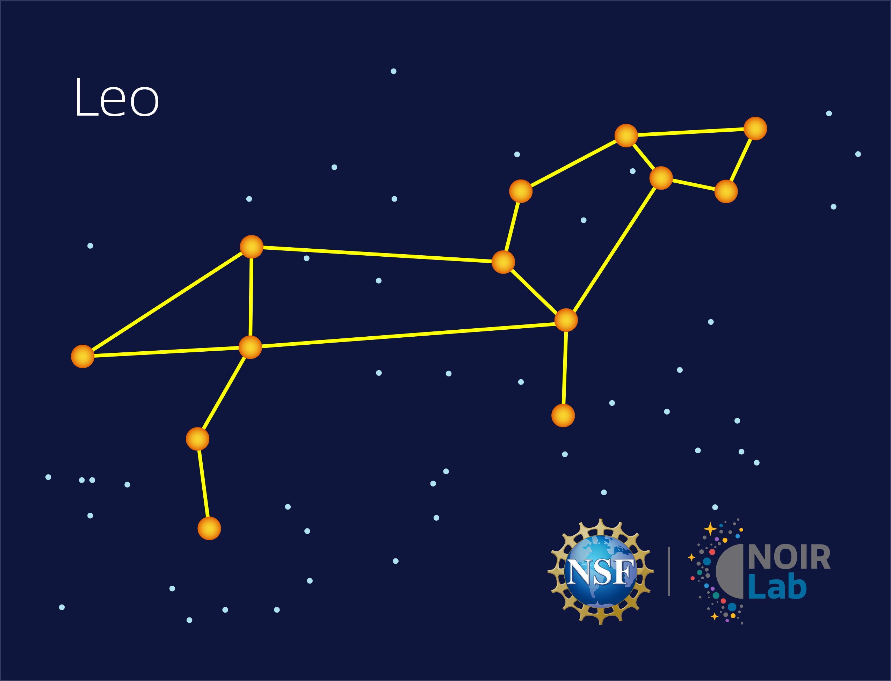
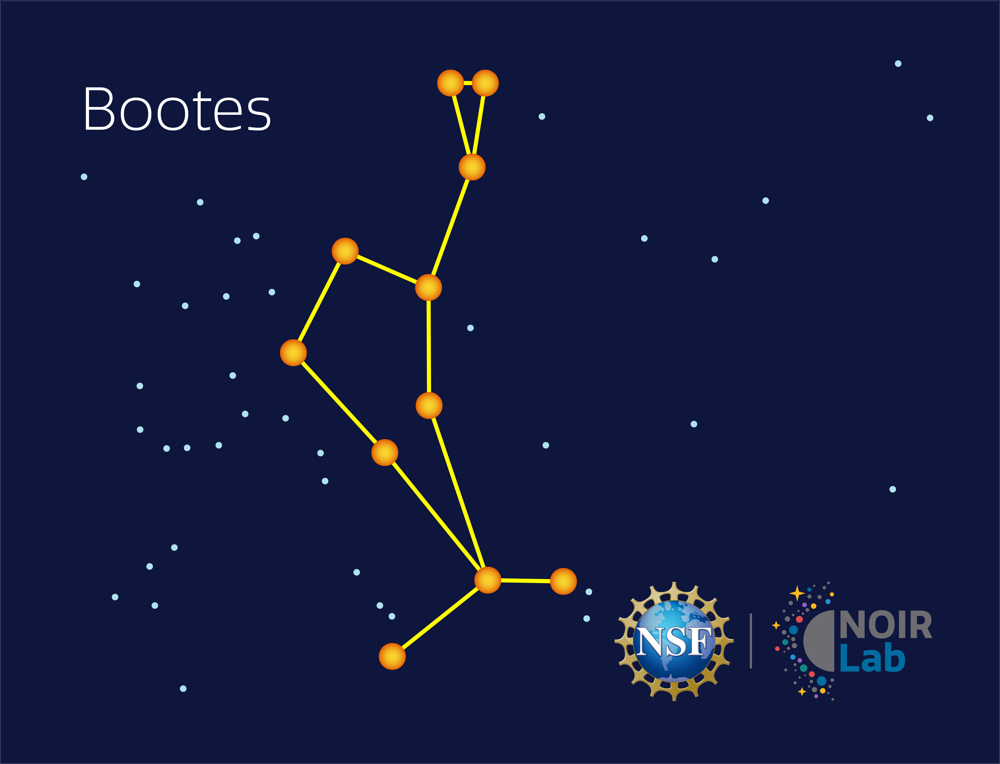
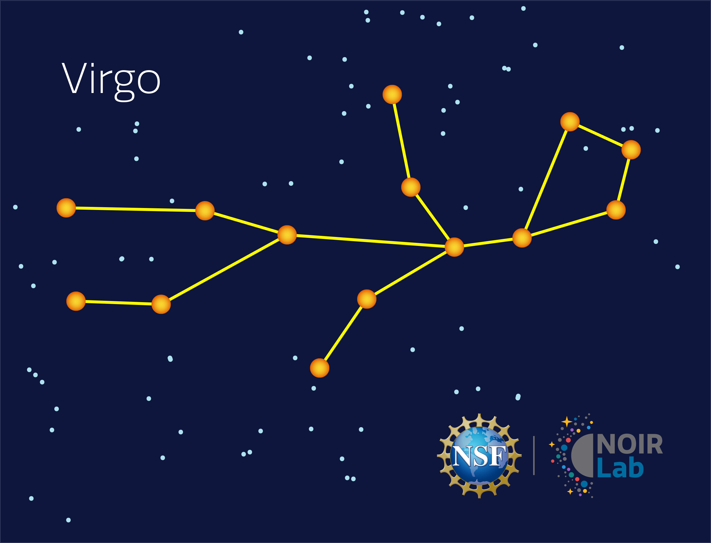
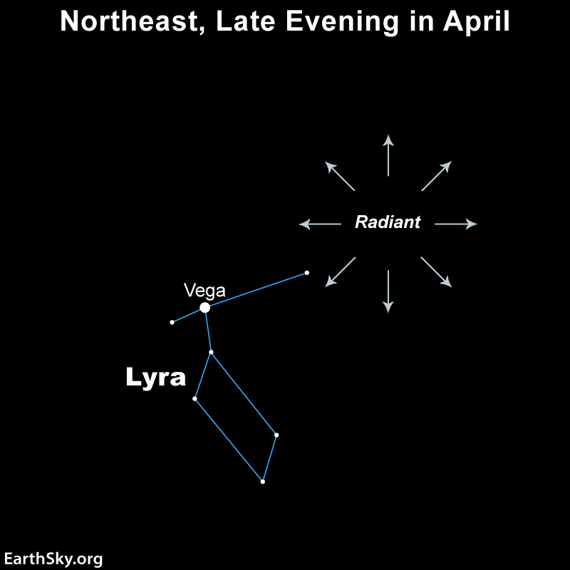

Spring evenings in Southern California bring Leo, Boötes, and Virgo into view, each easy to trace once you know the shape and the bright star that anchors it. The Lyrid meteor shower also lights up the sky in late April.

Shaped like a backwards question mark, Leo is anchored by the bright star Regulus at its base. It rises in the east and climbs high in the south by night time.
Click here for a real night-sky photo of this constellation.

Shaped like a kite and easy to find, Boötes is anchored by the bright orange star Arcturus. Follow the arc of the Big Dipper's handle to "arc to Arcturus" high in the eastern sky.
Click here for a real night-sky photo of this constellation.

Marked by the bright star Spica, Virgo sits low in the south during spring evenings. Continue the arc from Big Dipper's handle past Arcturus to "speed on to Spica."
Click here for a real night-sky photo of this constellation.

One of the oldest known meteor showers, the Lyrids peak in late April and can produce up to 18 meteors per hour under dark skies. They radiate from near the constellation Lyra, high in the northeast after midnight.